Chapter 11: How do regimes change? Contentious politics and its diffusion
Xavier Marquez
2017-01-15
Introduction
This vignette shows how to replicate and extend the charts in chapter 11 of my book Non-democratic Politics: Authoritarianism, Dictatorships, and Democratization (Palgrave Macmillan, 2016). It assumes that you have downloaded the replication package as follows:
if(!require(devtools)) {
install.packages("devtools")
}
devtools::install_github('xmarquez/AuthoritarianismBook')It also assumes you have the dplyr, ggplot2, scales, forcats, tidyr, and knitr packages installed:
if(!require(dplyr)) {
install.packages("dplyr")
}
if(!require(ggplot2)) {
install.packages("ggplot2")
}
if(!require(scales)) {
install.packages("forcats")
}
if(!require(forcats)) {
install.packages("scales")
}
if(!require(knitr)) {
install.packages("knitr")
}
if(!require(tidyr)) {
install.packages("tidyr")
}Figure 11.1: Transition events in non-democratic regimes, 1945-2010
Original figure
This figure counts only transitions in non-democratic regimes. There are 223 such events in this period, 79 of them towards democracy, 105 towards other forms of non-democracy, and the rest to state breakdown, foreign occupation, or other no-authority conditions. Regime data comes from Geddes, Wright, and Frantz (2014).
library(AuthoritarianismBook)
library(dplyr)
library(ggplot2)
data <- all_gwf_periods %>%
mutate(gwf_previous = ifelse(grepl("democracy",gwf_full_regimetype),
"Democracy",
ifelse(grepl("military|oligarchy|personal|party|monarchy",
gwf_full_regimetype),
"Non-democratic regime",
"Other"))) %>%
group_by(country_name) %>%
mutate(gwf_next = lead(gwf_previous),
gwf_next = ifelse(is.na(gwf_next) & gwf_enddate != "2010-12-31",
"Other",
gwf_next),
gwf_howend = plyr::mapvalues(gwf_howend,
from = c("9: state ceases to exist ends or government fails to control most of the territory",
"8: new autocratic leader selected, changes rules, and remains in power",
"6: insurgents, revolutionaries, or combatants fighting a civil war",
"3: no incumbent runs in competitive election won by opponent",
"1: regime insiders change rules of regime"),
to = c("9: state ceases to exist or government\nfails to control most of the territory",
"8: new autocratic leader selected,\nchanges rules, and remains in power",
"6: insurgents, revolutionaries,\nor combatants fighting a civil war",
"3: no incumbent runs in com-\npetitive election won by opponent",
"1: regime insiders change rules"))) %>%
filter(!is.na(gwf_howend), !grepl("0",gwf_howend))
ggplot(data = data,
aes(x = gwf_enddate,
y = gwf_howend,
color = gwf_next,
shape = gwf_next)) +
theme_bw() +
geom_point() +
labs(y = "",
x = "",
color = "Transition to:",
shape = "Transition to:") +
theme(legend.position = "bottom") +
guides(shape = guide_legend(title.position = "top"),
color = guide_legend(title.position = "top"))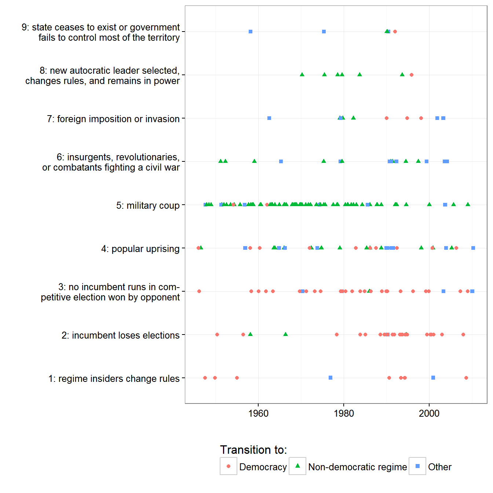
Extension 1: Disaggregating the transition info by country
We can disaggregate this information by country:
ggplot(data = data,
aes(y = forcats::fct_rev(country_name),
x = gwf_enddate,
color = gwf_next,
shape = gwf_next)) +
theme_bw() +
geom_point() +
labs(y = "",
x = "",
color = "Transition to:",
shape = "Transition to:") +
theme(legend.position = "bottom") +
guides(shape = guide_legend(title.position = "top"),
color = guide_legend(title.position = "top")) +
facet_wrap(~gwf_howend, ncol = 1, scales = "free")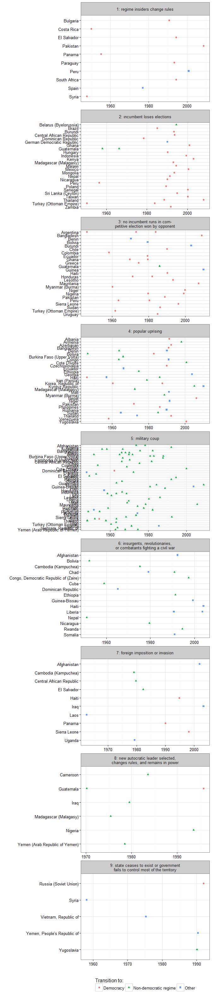
Figure 11.2: Success rates of violent and non-violent resistance campaigns, 1945-2006
Original figure
The data on regime change campaigns is from the Nonviolent and Violent Campaigns and Outcomes (NAVCO) data project, version 2.0, described in Chenoweth and Lewis (2013), and available here. The primary method of resistance is an ideal type; campaigns sometimes used both violent and non-violent methods over their lifetime, and some changed their goals as well.
data <- navco_2 %>%
group_by(id, campaign, navco1designation) %>%
mutate(time = year - min(year)) %>%
group_by(navco1designation) %>%
arrange(time) %>%
filter(!is.na(success),
camp_goals == 0) %>%
mutate(prop_success = cumsum(success)/length(unique(id))) %>%
filter(success == 1)
ggplot(data = data, aes(x=time,
y=prop_success,
linetype = factor(navco1designation,
labels = c("Violent","Non-violent")))) +
geom_line() +
labs(y = "Cumulative percent of regime-change campaigns that succeeded",
x = "Years since start of campaign",
color = "Primary method of resistance",
linetype = "Primary method of resistance") +
theme_bw() +
theme(legend.position="bottom") +
scale_color_grey() +
scale_y_continuous(labels = scales::percent)
Extension 1: Disaggregating by country
We can disaggregate this information by country:
data <- navco_2 %>%
mutate(navco1designation = factor(navco1designation, labels = c("Violent","Non-violent")),
success = factor(success, labels = c("Unsuccessful","Successful"))) %>%
group_by(id, campaign, navco1designation) %>%
mutate(time = year - min(year)) %>%
arrange(country_name, year, success,
camp_goals)
ggplot(data = data %>% filter(navco1designation == "Violent"),
aes(x= reorder(paste(country_name, campaign) %>%
strtrim(40),
time, max),
y= year,
fill = success,
color = success)) +
geom_tile() +
labs(y = "Year",
x = "",
fill = "Campaign success?",
color = "Campaign success?") +
theme_bw() +
theme(legend.position="bottom") +
facet_wrap(~navco1designation, ncol = 2) +
coord_flip() 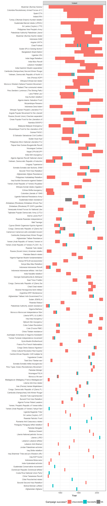
ggplot(data = data %>% filter(navco1designation == "Non-violent"),
aes(x= reorder(paste(country_name, campaign) %>%
strtrim(40),
time, max),
y= year,
fill = success,
color = success)) +
geom_tile() +
geom_point() +
labs(y = "Year",
x = "",
fill = "Campaign success?",
color = "Campaign success?") +
theme_bw() +
theme(legend.position="bottom") +
facet_wrap(~navco1designation, ncol = 2) +
coord_flip()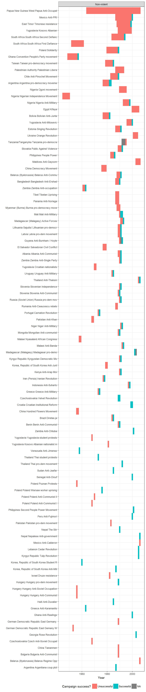
Figure 11.3: Success of violent and non-violent resistance campaigns by level of repression
Original figure
The data on regime change campaigns is from the Nonviolent and Violent Campaigns and Outcomes (NAVCO) data project, version 2.0, described in Chenoweth and Lewis (2013). The area of each violin is proportional to the number of campaigns in each category. The primary method of resistance is an ideal type; campaigns sometimes used both violent and non-violent methods over their lifetime, and some changed their goals as well. The indicator of repression is a latent variable measure from Fariss (2014), averaged over the years in which the entire campaign took place; lower values mean more repression, with 0 being the average level of repression in the 1949-2013 period.
data <- left_join(navco_2, fariss %>%
select(country_name, GWn, year, contains("latent")))## Joining, by = c("country_name", "GWn", "year")data <- data %>%
group_by(country_name,id,campaign) %>%
filter(!is.na(success), camp_goals==0) %>%
summarise(success = max(success),
violence = max(unique(navco1designation)),
repression = mean(latentmean,na.rm=TRUE)) %>%
ungroup() %>%
mutate(success = factor(success,
labels = c("Unsuccessful","Successful")),
violence = factor(violence,
labels = c("Violent","Non-violent")))
ggplot(data = data,
aes(x = violence,
y = repression,
group = violence)) +
geom_violin(scale = "count",
fill = "lightgrey",
draw_quantiles = c(0.1,0.5,0.9)) +
facet_wrap(~success) +
theme_bw() +
theme(legend.position="bottom") +
labs(x = "Campaign type",
y = "Avg. level of repression during the years of the campaign
(higher values mean less repression)") +
facet_wrap(~success)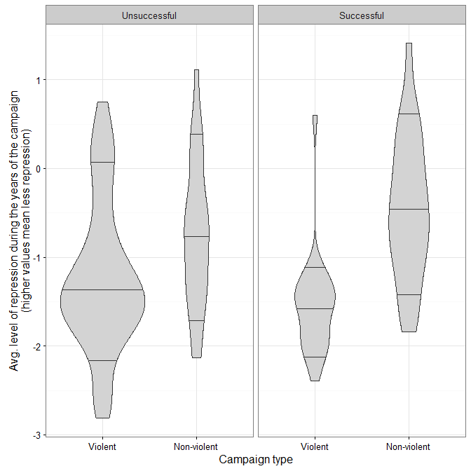
Extension 1: Disaggregating by country
data <- inner_join(navco_2, fariss %>%
select(country_name, GWn, year, contains("latent"))) %>%
mutate(success = factor(success,
labels = c("Unsuccessful","Successful")),
navco1designation = factor(navco1designation,
labels = c("Violent","Non-violent")),
country_campaign = paste(country_name, campaign) %>%
strtrim(40)) %>%
group_by(id, campaign, navco1designation) %>%
mutate(time = year - min(year)) %>%
ungroup()## Joining, by = c("country_name", "GWn", "year")ggplot(data = data,
aes(x= reorder(country_campaign,
time,
max),
y= year,
fill = latentmean)) +
geom_tile() +
geom_point(data = data %>% filter(success == "Successful"),
aes(shape = success)) +
labs(y = "Year",
x = "",
fill = "Repression level",
shape = "Campaign success?") +
theme_bw() +
theme(legend.position="bottom") +
scale_fill_gradient2() +
facet_wrap(~navco1designation, ncol = 2) +
coord_flip()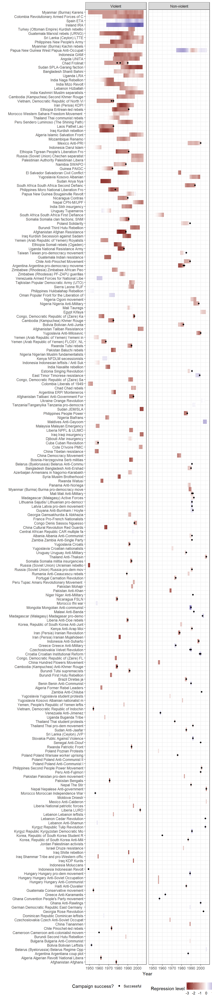
Figure 11.4: Post-campaign outcomes, 1945-2006
Original figure
Post-campaign outcomes for successful and usuccessful regime change campaigns. The data on regime change campaigns is from the Nonviolent and Violent Campaigns and Outcomes (NAVCO) data project, version 2.0, described in Chenoweth and Lewis (2013). The primary method of resistance is an ideal type; campaigns sometimes used both violent and non-violent methods over their lifetime, and some changed their goals as well. Democracy data from Pemstein, Meserve, and Melton (2010), extended by me (Márquez 2016).
library(tidyr)
data <- navco_2 %>%
group_by(id) %>%
filter(camp_goals == 0) %>%
mutate(year_success = max(year)) %>%
filter(year == year_success) %>%
group_by(country_name,
GWn,
id,
campaign,
success,
year_success,
navco1designation) %>%
mutate(year = list(1930:2014)) %>%
unnest() %>%
left_join(extended_uds %>%
select(country_name,
GWn, year,
index,
index.pct975,
index.pct025)) %>%
filter(!is.na(index)) %>%
group_by(id) %>%
mutate(time = year - year_success) %>%
ungroup() %>%
mutate(success = factor(success,
labels = c("Unsuccessful","Successful")),
violence = factor(navco1designation,
labels = c("violent campaign","non-violent campaign")),
labels = paste(success,violence)) %>%
arrange(country_name,id, year_success, year)## Joining, by = c("country_name", "GWn", "year")ggplot(data = data %>% filter(time > -11, time < 11),
aes(x=time,
y = index,
ymax = index.pct975,
ymin = index.pct025,
group = paste(country_name, id, year_success))) +
geom_path(alpha=0.2) +
geom_ribbon(alpha=0.05) +
geom_smooth(aes(group=NULL), color = "black", linetype=2) +
theme_bw() +
theme(legend.position="bottom") +
labs(x="Years to or from end of campaign",y="Unified democracy score\n(democracy = > 0.5)") +
geom_vline(xintercept=0, color = "red") +
geom_hline(yintercept=0.5, color = "red") +
facet_wrap(~labels)## `geom_smooth()` using method = 'gam'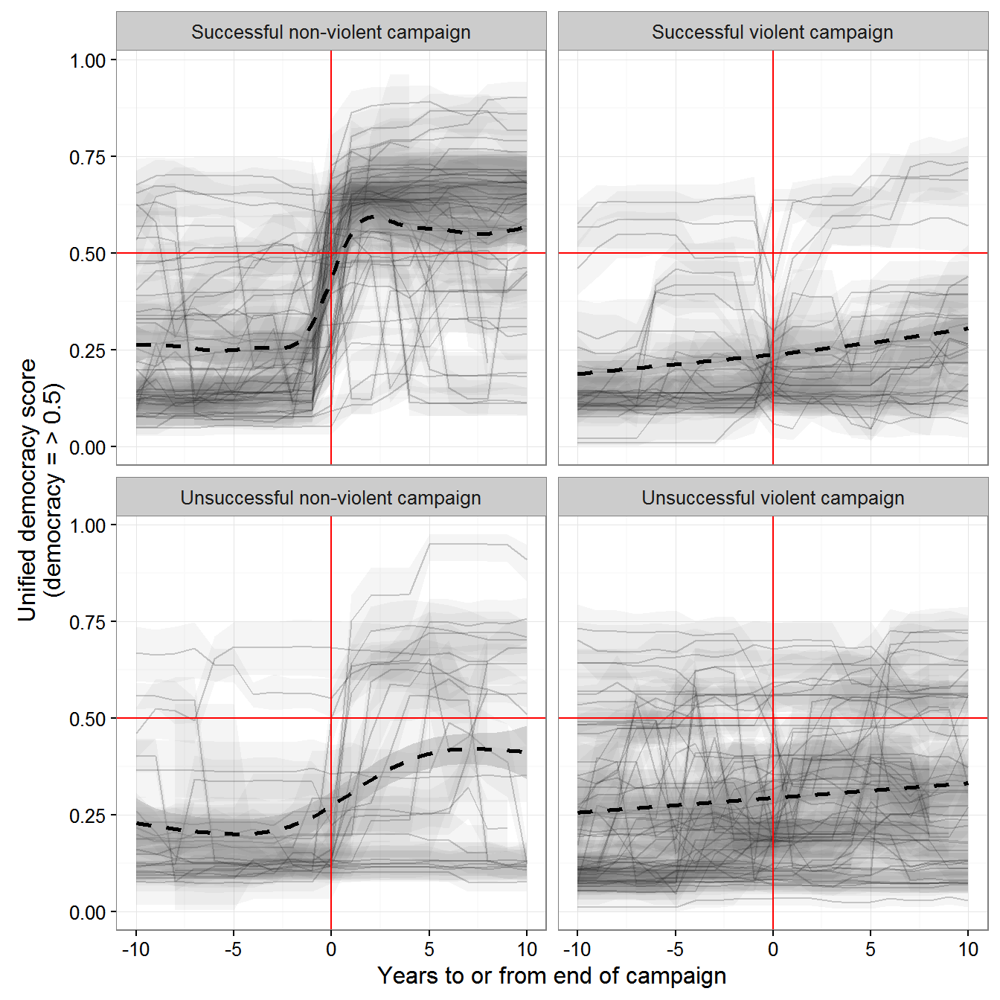
Extension: Disaggregating outcomes by country
data <- data %>%
mutate(country_campaign = paste0(country_name,", ",campaign))
ggplot(data = data %>%
filter(time > -11, time < 11, labels == "Successful non-violent campaign"),
aes(x=time,
y = index,
ymax = index.pct975,
ymin = index.pct025,
group = paste(country_name, id, year_success))) +
geom_path() +
geom_ribbon(alpha=0.3) +
geom_text(data = data %>%
ungroup() %>%
filter(time > -11, time < 11,
labels == "Successful non-violent campaign",
(year %in% c(year_success)) |
((year %% 5) == 0)),
aes(label = year),
check_overlap = TRUE) +
theme_bw() +
theme(legend.position="bottom") +
labs(x="Years to or from end of campaign",
y="Unified democracy score\n(democracy = > 0.5)",
title = "Successful non-violent campaigns") +
geom_vline(xintercept=0, color = "red") +
geom_hline(yintercept=0.5, color = "red") +
facet_wrap(~country_campaign, ncol = 2)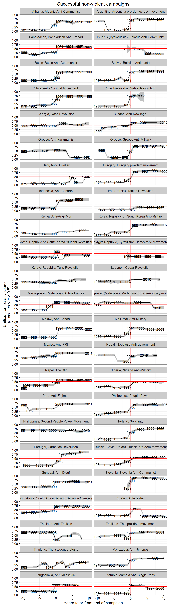
ggplot(data = data %>%
filter(time > -11, time < 11, labels == "Successful violent campaign"),
aes(x=time,
y = index,
ymax = index.pct975,
ymin = index.pct025,
group = paste(country_name, id, year_success))) +
geom_path() +
geom_ribbon(alpha=0.3) +
geom_text(data = data %>%
ungroup() %>%
filter(time > -11, time < 11,
labels == "Successful violent campaign",
(year %in% c(year_success)) |
((year %% 5) == 0)),
aes(label = year),
check_overlap = TRUE) +
theme_bw() +
theme(legend.position="bottom") +
labs(x="Years to or from end of campaign",
y="Unified democracy score\n(democracy = > 0.5)",
title = "Successful violent campaigns") +
geom_vline(xintercept=0, color = "red") +
geom_hline(yintercept=0.5, color = "red") +
facet_wrap(~country_campaign, ncol = 2)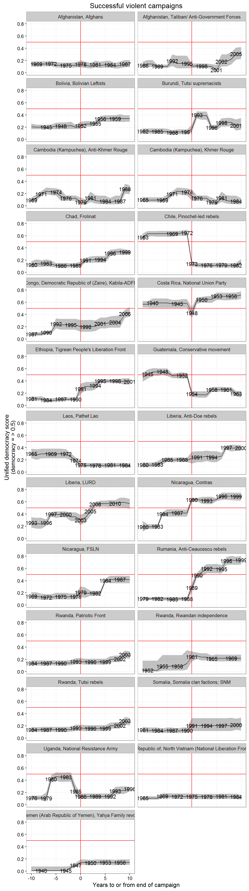
ggplot(data = data %>%
filter(time > -11, time < 11, labels == "Unsuccessful non-violent campaign"),
aes(x=time,
y = index,
ymax = index.pct975,
ymin = index.pct025,
group = paste(country_name, id, year_success))) +
geom_path() +
geom_ribbon(alpha=0.3) +
geom_text(data = data %>%
ungroup() %>%
filter(time > -11, time < 11,
labels == "Unsuccessful non-violent campaign",
(year %in% c(year_success)) |
((year %% 5) == 0)),
aes(label = year),
check_overlap = TRUE) +
theme_bw() +
theme(legend.position="bottom") +
labs(x="Years to or from end of campaign",
y="Unified democracy score\n(democracy = > 0.5)",
title = "Unsuccessful non-violent campaigns") +
geom_vline(xintercept=0, color = "red") +
geom_hline(yintercept=0.5, color = "red") +
facet_wrap(~country_campaign, ncol = 2)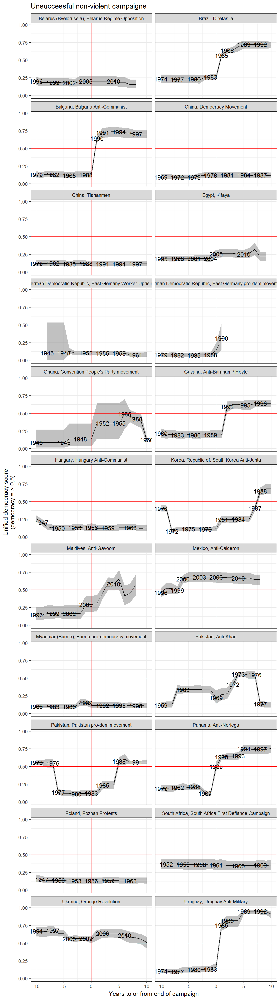
ggplot(data = data %>%
filter(time > -11, time < 11, labels == "Unsuccessful violent campaign"),
aes(x=time,
y = index,
ymax = index.pct975,
ymin = index.pct025,
group = paste(country_name, id, year_success))) +
geom_path() +
geom_ribbon(alpha=0.3) +
geom_text(data = data %>%
ungroup() %>%
filter(time > -11, time < 11,
labels == "Unsuccessful violent campaign",
(year %in% c(year_success)) |
((year %% 5) == 0)),
aes(label = year),
check_overlap = TRUE) +
theme_bw() +
theme(legend.position="bottom") +
labs(x="Years to or from end of campaign",
y="Unified democracy score\n(democracy = > 0.5)",
title = "Unsuccessful violent campaigns") +
geom_vline(xintercept=0, color = "red") +
geom_hline(yintercept=0.5, color = "red") +
facet_wrap(~country_campaign, ncol = 2)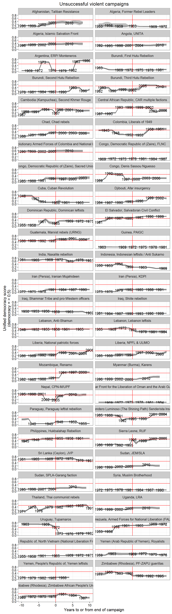
References
Chenoweth, Erica, and Orion A Lewis. 2013. “Unpacking Nonviolent Campaigns: Introducing the Navco 2.0 Dataset.” Journal of Peace Research 50 (3): 415–23. doi:10.1177/0022343312471551.
Fariss, Christopher J. 2014. “Respect for Human Rights Has Improved over Time: Modeling the Changing Standard of Accountability.” American Political Science Review 108 (02): 297–318. doi:doi:10.1017/S0003055414000070.
Geddes, Barbara, Joseph Wright, and Erica Frantz. 2014. “Autocratic Breakdown and Regime Transitions: A New Data Set.” Perspectives on Politics 12 (1): 313–31. doi:10.1017/S1537592714000851.
Márquez, Xavier. 2016. “A Quick Method for Extending the Unified Democracy Scores.” Available at SSRN 2753830. doi:10.2139/ssrn.2753830.
Pemstein, Daniel, Stephen Meserve, and James Melton. 2010. “Democratic Compromise: A Latent Variable Analysis of Ten Measures of Regime Type.” Political Analysis 18 (4): 426–49. doi:10.1093/pan/mpq020.